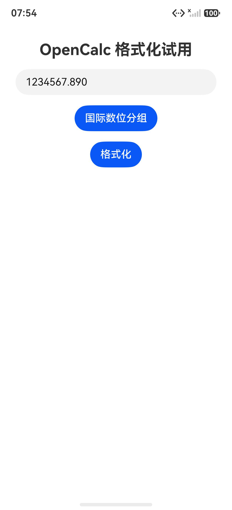
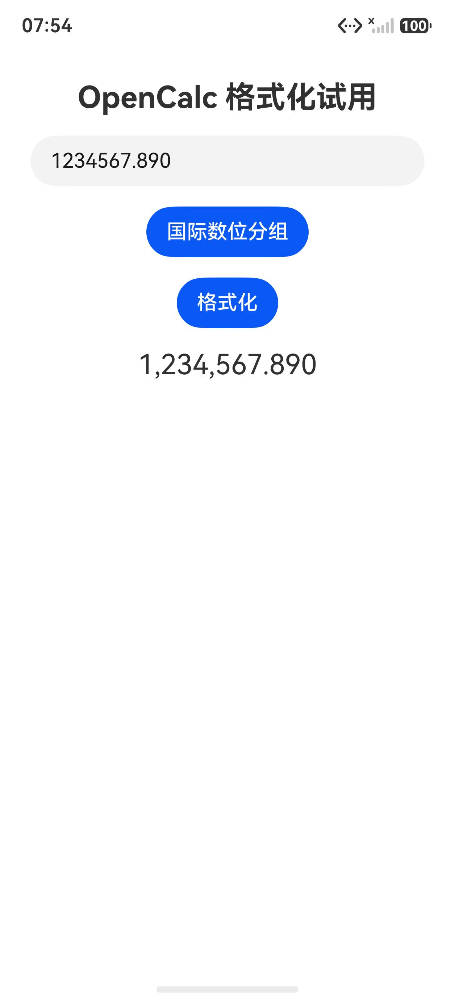
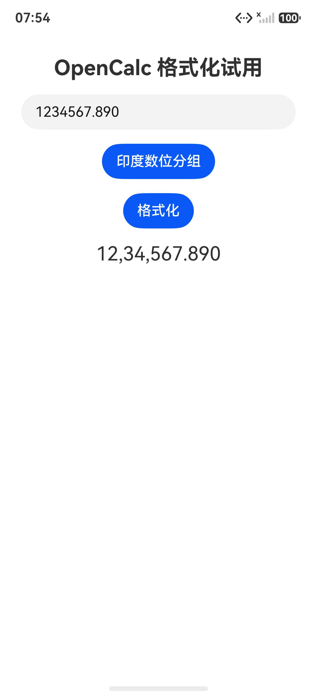

这个镜像“能不能用”取决于三件事，只看版本号是发现不了的：
| # | 事实 | 说明 |
|---|---|---|
| 1 | 只需要鸿蒙模拟器 | 0.4.1 自带评测包，里面有预先录好的安卓参考，流程里不再需要安卓设备。容器里只启动鸿蒙模拟器。 |
| 2 | 评测包必须先被确认 | 0.4.1 的硬性要求：评测包没有被确认过，第一个阶段就会失败。它的命令行没有确认命令，只有控制台页面上有。镜像构建时代为确认了内置的 OpenCalc 评测包，确认人是 skillsrsi-sandbox-image。 |
| 3 | 模型要支持三种调用方式 | 流式的工具调用（迁移，由 DevEco Code 发起）、强制的工具调用（诊断，最多 48 轮）、JSON 输出（裁判打分、改写技能）。缺任何一种，这一轮都会失败。 |
| 验证项 | 怎么验的 | 结果 |
|---|---|---|
| 能从仓库代码构建 | 在 173 上用仓库里的 skillsrsi/ 目录构建 | 通过 约 25 秒 |
| 镜像里的脚本和仓库一致 | 逐个比对 7 个文件的 SHA-256 | 通过 见 skillsrsi/build/BUILD-INFO.txt |
| 自检（假模型） | 全新容器里跑 skillsrsi-selftest.sh | 通过 8 个阶段，运行 113 秒 |
| 真实运行（默认优化器） | deepseek-v4.1-flash，优化器 arkts-routed-bc | 完成 无可执行工作项，运行 178 秒 |
| 真实运行（SkillOpt） | deepseek-v4.1-flash，优化器 skillopt | 完成 无可执行工作项，运行 155 秒 |
| 设备上真实取证 | 看截图和机械回放记录 | 通过 见 4.3 节 |
| 与 Mac 上的结果对照 | 见第五节 | 一致 |
| 导出包 | 校验和、解压完整性、重新导入 | 通过 8.13G，SHA-256 以 8a0d32a7 开头；解压完整性检查通过，在 173 上重新导入成功，镜像 ID 不变 |
| 换一台机器导入 | — | 未验证 |
| 多个容器同时跑 | — | 未验证 |
| 改写技能 → 候选复验（真实模型） | — | 未走到 诊断没有发现问题，流程在诊断后正常收尾 |
| 项目 | 内容 |
|---|---|
| 基础镜像 | harness-dev:2.2（ID 以 01ef464e 开头），本身没有改动 |
| SkillsRSI | 0.4.1 官方发布包，SHA-256 以 9aedc590 开头，装在 /opt/skills-rsi |
| HMBot | 0.1.6，npm 官方包，构建时下载并校验 |
| 示例任务 | OpenCalc 数字格式化（源码固定到一次提交），配方在 /opt/skills-rsi-home/examples/opencalc |
| 评测包 | 内置的 OpenCalc 评测包，已确认，确认人 skillsrsi-sandbox-image |
| 编译缓存 | hvigor 与 npm 的缓存已预热 |
| 两处适配 | 用 DevEco 自带的 Node 24.14.1（系统自带的是 24.0.0，版本不够）；补一个指向系统 JDK 21 的软链接 |
| 入口脚本 | /opt/scripts/skillsrsi（命令行入口）、skillsrsi-run.sh（跑一轮）、skillsrsi-selftest.sh（自检） |
| 自检工具 | 按剧本回答的假模型，和一份能通过示例检查的迁移产物 |
| 不包含 | 任何模型凭据；rsi.agents 标签（rsi 的调度器不会把普通任务派到这个镜像上） |
以下数据都来自最终镜像（ID 以 42ae0b9c 开头）上的三次运行，原件在 skillsrsi/evidence/。
| 阶段 | 用时 | 结果 |
|---|---|---|
| 冻结材料 | 0.1 秒 | 完成 |
| 冻结评测包 | 0.5 秒 | 完成 |
| 设备预检 | 0.2 秒 | 完成 |
| 基线迁移和评测 | 53.0 秒 | 完成 客观检查 15/15，设备上 3 项全过 |
| 诊断 | 0.5 秒 | 完成 |
| 改写技能 | 0.4 秒 | 完成 生成了候选 |
| 候选迁移和评测 | 55.2 秒 | 完成 客观检查 15/15，设备上 3 项全过 |
| 选择版本 | 0.2 秒 | 完成 两边满分，保留基线 |
自检里除了模型，其余都是真的：两轮迁移都由 DevEco Code 1.17.9 在容器里执行，技能加载成功、正常结束、技能文件未被改动、退出码为 0；鸿蒙模拟器上实际点了按钮、读到了结果。模拟器启动另需约 40 到 60 秒。假模型跳过了“先写规格说明”这一步，所以执行顺序审计判为“违规”。
| 项目 | 默认优化器 arkts-routed-bc | SkillOpt |
|---|---|---|
| 运行用时（不含模拟器启动） | 178 秒 | 155 秒 |
| 模型请求次数 | 49 | 49 |
| 基线迁移和评测 | 88.7 秒 | 81.1 秒 |
| 迁移本身（DevEco Code 执行） | 38.4 秒，15 次模型请求，13 次工具调用 | 31.9 秒，10 次模型请求，11 次工具调用 |
| 客观检查 | 15/15 | 15/15 |
| 设备评测 | 页面 1/1，交互 2/2 | 页面 1/1，交互 2/2 |
| 裁判打分 | 3 项通过 输入 7,099 tokens | 3 项通过 输入 7,099 tokens |
| 诊断 | 83.7 秒，取证 48 次，结论：无需修改 | 66.1 秒，取证 48 次，结论：无需修改 |
| 执行顺序审计 | 违规 | 需要人工复核 |
| 结论 | 无可执行工作项 | 无可执行工作项 |
| 走到的阶段 | 5 个（诊断后正常收尾） | 5 个（诊断后正常收尾） |
模型请求的 49 次里，裁判 1 次，诊断 48 次。两种优化器只在“改写技能”这一步不同，而诊断没有发现问题，所以两轮的结论完全一样。加载的技能文件指纹（以 d96c450e 开头）与在 Mac 上、在原作者的演示里看到的一致。
下面三张是 SkillOpt 那一轮里，容器内的鸿蒙模拟器被实际操作时截下来的：先确认页面到达，再点“格式化”，然后切换分组后再点一次“格式化”。


1,234,567.890
12,34,567.890| 项目 | Mac | 173 服务器容器 |
|---|---|---|
| 系统 | macOS（Apple 芯片） | Linux（x86_64 容器） |
| DevEco Code | 0.2.5，官方 macOS 包 | 1.17.9，自行构建的 Linux 版 |
| SkillsRSI | 0.3.1（真实运行）；0.4.1（假模型自检） | 0.4.1 |
| 模型 | glm-5.4 | deepseek-v4.1-flash |
| 优化器 | 两种各跑一轮 | 两种各跑一轮 |
| 基线 | 客观检查 15/15，设备上 3 项全过 | 客观检查 15/15，设备上 3 项全过 |
| 结论 | 无可执行工作项 | 无可执行工作项 |
| 需要的设备 | 0.3.1 需要鸿蒙和安卓两台模拟器 | 只需要鸿蒙模拟器 |
| 现象 | 影响 | 处理 |
|---|---|---|
| 示例任务对强模型来说太简单 | 真实运行都停在“诊断”，“改写技能 → 候选复验”这条链路还没有被真实模型走过 | 想验证优化有没有效果，需要一个基线会出错的任务，并为此另外制作评测包 |
| 默认是“影子评分” | 裁判没有经过校准，不会出现“已验证改善” | 需要正式结论时先做裁判校准（本镜像没有做） |
| 诊断阶段模型请求多 | 一轮约 49 次模型请求，诊断占 48 次，耗时约 1 到 1.5 分钟 | 排任务时按这个量估计额度和时间 |
| 执行顺序审计的结果不稳定 | 三次运行里出现过“违规”和“需要人工复核”两种结果，取决于模型先写规格还是先写代码 | 影子评分下不阻断流程；要用于正式准出，需要先搞清它的判定规则 |
| 评测包的“确认人”是构建时代填的 | 这一步本是给人把关用的 | 运行时加环境变量 SKILLS_RSI_REVIEWER 换成自己的名字 |
| 第一次编译要联网 | 编译工具第一次运行要下载 pnpm，网络不通时会卡满 4 分钟后失败 | 镜像里已经预热；自己重建时，构建机要能访问 npm 源 |
| 系统自带的 Node 版本不够 | 直接用 node 调用 SkillsRSI 会因为版本太旧而失败 | 用镜像自带的入口 /opt/scripts/skillsrsi，它用的是 DevEco 自带的 Node 24.14.1 |
| SkillsRSI 的发布包需要登录才能下载 | 公开仓库里没有这个包 | 向发布方索取，构建时会核对 SHA-256 |
| 一轮的完整输出约 200M | 几乎全是工作副本和编译中间产物 | 脚本只拷出约 5M 的证据；需要完整目录时，从容器的 /opt/skills-rsi-home/runs 取 |
docker run --rm --device /dev/kvm --cpus 8 --memory 16g -v 输出目录:/work/skillsrsi-selftest-out harness-dev:2.2-skillsrsi /opt/scripts/skillsrsi-selftest.sh/work/skillsrsi-out、脚本换成 /opt/scripts/skillsrsi-run.sh，并通过环境变量 SKILLS_RSI_API_KEY、SKILLS_RSI_BASE_URL、SKILLS_RSI_MODEL 传入模型凭据、接口地址和模型名。路径（skillsrsi/evidence/ 下） | 内容 |
|---|---|
selftest/ | 自检这一轮：容器输出、run.json、两轮迁移的回执与设备报告、客观检查结果、执行顺序审计、三张截图 |
real-default/ | 默认优化器那一轮：配方、容器输出、run.json、裁判原话、诊断结论、基线的回执与设备报告、三张截图 |
real-skillopt/ | SkillOpt 那一轮，内容同上 |
pipeline.log | 三次运行在一个流水线里依次执行时各步的结束时间和退出码 |
../build/BUILD-INFO.txt | 最终镜像里的构建信息：各组件版本、发布包与脚本的指纹 |